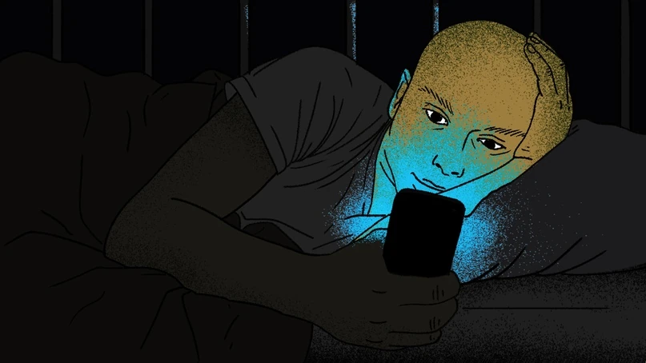

Ночные переписки и свидание в тюремном кафе: к Mr. Nobody, аки жена декабриста, приезжает девушка, с которой он познакомился во «ВКонтакте»
Кажется, все началось с взаимных упражнений в остроумии. Это были комментарии уже неизвестно к чему в каком-то паблике со смутной тематикой. Я сидел в «ВК» с фейка, она — тоже. Спустя несколько постов с оттенком флирта мы перешли в личные сообщения.

Даже странно — сейчас я знаю этого человека очень долго, но кажется, что, по сути, и не знаю вовсе: мне неизвестны день ее рождения, любимый цвет или хотя бы точный возраст — словом, типичные вещи, которые близкие люди вроде бы должны знать друг о друге.
Каждую ночь мы обменивались длинными историями из своих биографий — обрывками детства и юности. И в гораздо меньшей степени — событиями настоящего. Я не скоро узнал ее настоящее имя и город, в котором она живет. Сколько ночей я провел во «ВКонтакте», листая списки девушек по заданным фильтрам, пытаясь ее найти! Иногда мне хватало одного взгляда на аватарку, чтобы понять — нет, так она выглядеть не может. Если появлялись сомнения, я изучал сохраненки: надеялся найти совпадения, хоть какую-нибудь ниточку, за которую можно зацепиться. Порой будто бы между делом я скидывал ей очередную ссылку и спрашивал:
— Это не ты?
— Ох, нет, разумеется нет, — отвечала она, и мы возвращались к прерванному моим вопросом диалогу.
Я был уверен: если найду ее настоящую страницу и скину ей, она не сможет соврать. Видимо, в нашей игре были какие-то правила — неписаные, но от этого не менее важные. Наша анонимность (настоящие имена использовались только для удобства обращения) позволяла исключить обычные в таких условиях приукрашивания собственных личностей, биографий и талантов. Я чистосердечно описывал свои взлеты и падения (последних было, разумеется, на порядок больше), а она — свои. Моя тусклая действительность резко контрастировала с этими теплыми хорошими моментами.
Основная, настоящая страница Насти (условно) стала мне известна примерно через два с лишним месяца. Точно не помню, как именно это произошло — то ли мне удалось найти ее среди тысяч других Анастасий, то ли она помогла мне сама, но принципиального значения это не имеет.
Когда я впервые увидел ее фото, показалось, что мне уже было известно, как она выглядит: фотографии на странице словно просто подтвердили то, что я уже знал. Это была изящная девушка со светлыми волосами и выразительными глазами — их она подчеркивала макияжем, что, впрочем, лично мне показалось излишним — я и так надолго запомнил ее взгляд.
Порой Настя демонстрировала почти собственническую подозрительность, а иногда — полное безразличие. Иной раз наша переписка становилась интимно-близкой, и наутро меня еще долго не покидало ощущение, что я провел ночь с девушкой — по-настоящему.
Общаясь друг с другом, мы часто пародировали известные типажи, добавляя отдельным пассажам выразительности благодаря капслоку:
— Если бы ты СОИЗВОЛИЛА обратить внимание… — начинал я.
Или:
— Ты, кажется, спутал меня с одной из своих шлюх, но ничего: всякое бывает при таком ИЗОБИЛИИ, — писала она.
Особенно часто разыгрывались сцены неудачного брака: непомерные для семейного бюджета траты жены, алкоголизм мужа, отсутствие секса (или его низкое качество) и прочие трафареты брачной жизни со взаимными упреками, пугающими своей достоверностью.

Словом, каждый раз было весело, каждый раз по-другому — днем я с нетерпением ждал ночи, а под утро расстраивался, оттого что приходилось отпускать ее и возвращаться в мой мир со спортсменами, начальниками отряда, зеками и ментами.
Кстати, о начальниках отряда. Их работа заключалась в сборе и подготовке разных документов: от графиков длительных свиданий до ходатайств на УДО. Видимо, это не слишком напрягало нашего отрядника, Виктора Сергеевича, так как большую часть времени я наблюдал его или спящим (в кабинете, который находился на втором этаже нашего барака), или смотрящим какой-то российский сериал про спецназовцев (там же).
Отрядник был человеком невыносимым (подозреваю, в том числе и для самого себя), но жадным и, соответственно, сговорчивым. Виктор Сергеевич отличался высоким ростом, гротескно большим для довольно тщедушного телосложения животом и постоянно выпученными глазами. Когда его особенно шокировала чья-то дерзость, он вставал, неподвижно смотря на провинившегося, будто складывая в голове пазл, а затем разражался градом проклятий и непонятно откуда ему известных цыганских ругательств.
Шныри готовили отряднику еду как минимум четыре раза в день, безропотно снося оскорбления. Порой сотрудник буквально вбегал в жилую секцию и орал:
— Я хочу печенья с маслом! Вы что, охуели? Забыли начальника отряда?
Или что-то в этом роде. Раскрасневшееся от негодования лицо, визгливый голос, в котором сквозило что-то по-детски капризное… Когда отрядник получал то, что хотел, дверь его кабинета захлопывалась, и он не выходил оттуда, пока голод не начинал снова его беспокоить. Среди зеков ходило выражение «заткнуть бутербродом», этимология которого, подозреваю, ясна.
Несмотря на скверный характер и постоянные вопли, отрядника уважали. Однажды наш мент вернулся из отпуска, румяный и заметно пополневший, так зеки смотрели на него чуть ли не с родительской любовью:
— Ох, а Сергеевич хорошо кушал, — приговаривали осужденные.
Уважение заключенных начальник отряда заслужил не своей неумеренностью в желаниях. Если к нам в отряд забегал обыск, из кабинета мигом вылетал Сергеич — орать на сотрудников, проводивших шмон. Это было вполне ожидаемо от человека в чине подполковника:
— Вы тут что забыли? На МОЕМ отряде все нормально! Что я здесь, во-вашему, делаю?!
— Плановый обыск, Сергеевич, раз в неделю положено. Отдел безопасности инструктировал, — оправдывались менты.
— Значит, обыск вы уже провели? Вон как все разворотили, а потом осужденные ко мне побегут жалобы писать: то пропало, это пропало. Ладно, теперь вам пора за работу, коллеги, — и Сергеевич вставал в выжидательную позу возле двери, а менты с понурым и виноватым видом покидали помещение.
Пока отрядник находился на рабочем месте, шмон в нашем бараке длился в среднем минут пять вместо обычных полутора часов. Если кто-то из осужденных нашего отряда шел на дисциплинарную комиссию, то Виктор Сергеевич тоже выдвигался с ним, в качестве защитника. Это была почти гарантия, что его «подопечного» не закроют в карцер.
Даже в моей судьбе этот человек сыграл не последнюю роль.

— К тебе можно приехать? — спросила она.
Мы оба понимали: это важный шаг. Но делали вид, что речь идет о самой обычной вещи на свете. Я с панической поспешностью описал ей возможные варианты, стараясь не выдавать волнения, которое помимо воли меня охватило.
Вариантов было несколько: краткосрочное свидание (трое суток в местном номере) и поход в кафе, которое располагалось в том же здании, что и школа (в ней учились преимущественно цыгане). Кафе представляло собой комнату с барной стойкой (разумеется, без алкоголя) и россыпью столиков и стульев. Там же находился большой телевизор и музыкальный центр.
Положенное раз в четыре месяца короткое свидание можно было заменить на свидание в кафе, но подобное считалось большой привилегией. Длительное же свидание в нашем случае исключалось — мы не женаты и, даже если обойти этот пункт, Насте было необходимо хотя бы раз отметиться на короткой свиданке, чтобы ее занесли в мое личное дело как гражданскую жену. Я узнал все это за неделю до вопроса Насти о приезде.
— Добрый день, Виктор Сергеевич, — сказал я, закрывая за собой дверь его кабинета.
— Привет-привет, — ответил начальник отряда.
На его лице запечатлелась сытая улыбка. На экране монитора — Windows Media Player с остановленным сериалом, на столе — тарелка с корками пиццы и банка сметаны (судя по всему, полупустая — во время разговора она то и дело заваливалась набок от веса лежащей в ней железной ложки). Сотрудник смотрел на меня выжидательно-жадно, видимо, предвкушая плоды нашего разговора — так ребенок смотрит на протянутое ему лакомство.
— Тут такое дело, Сергеевич. Девушка хочет ко мне приехать из Москвы. Далеко, сами понимаете. А через стекло друг на друга смотреть — такая себе перспектива, — начал я.
— Ха, ПЕРСПЕКТИВА! — он произнес это слово с таким смаком, будто только его и ждал. — Перспектив у тебя немного, ведь леди с тобой в браке не состоит…
Тут Сергеевич смерил меня своим томным и одновременно хитрым взглядом.
Я перешел в наступление:
— Думаю, мы найдем выход и поможем друг другу, гражданин начальник.
Сергеевич тут же просиял и удовлетворенно откинулся на стуле так, что тот скорбно заскрипел:
— Отлично, отлично. Приходи завтра — посмотрим, что я могу сделать.
Настя приехала в конце октября. Было уже довольно холодно и, подозреваю, со стороны мой облик был по-декабристски нелепым — огромная телогрейка, шапка-ушанка (с неизменно падающим ухом) и какое-то подобие валенок. Пока я шел до кафе, никак не мог унять волнение, которое меня охватило, — услышав приговор, я нервничал меньше. Впервые в жизни захотелось почитать мантру, возможно даже вслух. Наша встреча представлялась мне несчетное количество раз, а теперь это происходило на самом деле.
Я увидел ее, входящую в кафе вместе с моим начальником отряда, и окликнул. Она повернулась и, просияв, подбежала ко мне, кинулась на шею, а после порывисто впилась своими губами в мои. Когда поцелуй прервался, она начала что-то лепетать, но я только ошарашено стоял, будто находясь под гипнозом.
Настя же, видя мою реакцию, с заливистым смехом потянула меня за руку внутрь, в помещение. Мы как-то неловко уселись за столик, и она принялась торопливо извлекать из сумки продукты и книги, сопровождая каждый из выложенных предметов комментариями:
— Вот свежевыжатый сок, утром сделала, — говорила она, любовно демонстрируя литровую бутылку.
Или все так же суетливо:
— А это Пастернак. Я помню, что «Живаго» тебе не понравился, но в его небольших рассказах такой язык…
В книгах, которые она привезла мне, была целая куча пометок карандашом — если раньше я считал подобное вандализмом, то несколько позже, пробегая глазами все Настины подчеркивания, милые и умные комментарии, я ощущал какую-то особую близость.
Когда содержимое пакетов было выложено на стол, Настя снова села напротив. Через минуту я почувствовал, будто нахожусь слишком далеко от нее — за тысячу километров — поэтому поспешно уселся рядом.
Начальник отряда стоял неподалеку, возле барной стойки, вполголоса разговаривая о чем-то с зеком, который работал в кафе. Затем Сергеевич подошел к нам со сконфуженным видом (таким я его никогда не видел) и спросил:
— Что будете пить? — он произнес это тоном настолько заискивающим, что Настя еще долгое время думала, будто бы у осужденных и администрации самые теплые отношения.
— Мне черный чай, — сказала она.
— А мне кофе, Сергеевич, — добавил я.
— Знаю, знаю. Mr.Nobody у нас любитель кофе и пьет непременно без сахара, — произнес начальник отряда, удаляясь в сторону зека, который должен был выполнить наш заказ. Своим поведением Сергеевич напоминал какого-то подлого дворецкого, а я все яснее осознавал, что чем вежливее мой отрядник, тем больше придется заплатить.
Зек поставил на стол две чашки и вышел из кафе вместе с Сергеевичем, а мы с Настей остались вдвоем. Каждые полчаса дверь открывалась и из проема показывалась голова в синей фуражке.
— Все хорошо, ничего не нужно?
— Нет! — хором отвечали мы.
Я сидел рядом, держа Настю за руку, а все, что было вокруг нас, будто плыло, теряло свое наружное приличие, свой смысл и свойства: почему она должна уйти отсюда, а я должен остаться? Кто решил это? Почему какой-то сорокалетний мужик периодически проверяет, не занимаемся ли мы с Настей сексом?

В какие-то моменты осознание нелепости положения становилось настолько острым, что мне нужно было спасаться на ее губах. Порой мы слишком распалялись, и нас пугала неотвратимость появления синей фуражки в дверях — поцелуи и прикосновения оставляли горькое послевкусие отчаяния, вновь и вновь напоминая о времени.
На свидание в кафе нам было отведено четыре часа, и они пронеслись с невероятной скоростью. Иногда я специально поглядывал на время, пытаясь искусственно замедлить его ход, но как только я отводил взгляд, оно будто бы ускорялось втрое.
Когда мент сообщил нам, что осталось десять минут, нас с Настей словно выдернули из розетки — вокруг стало по-особенному тихо. И эта тишина давила.
Однажды Настя написала мне, что после свидания, стоя на перроне в ожидании поезда, она чувствовала себя брошенной, одинокой. Ей казалось, что мир чужд и враждебен. Тогда я собрал эти ощущения в один букет и назвал это состояние «каренинским», сведя все к шутке. Но когда она уехала, мои чувства были схожими. Этого я ей не сказал.